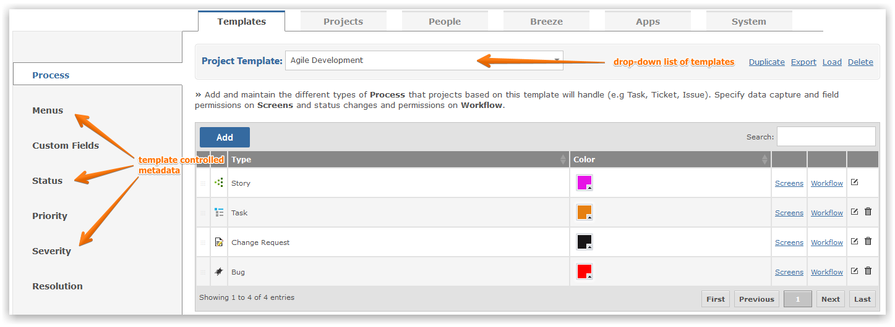

All projects are created from Project Templates, which control the metadata associated with a project, such as Status and Priority Codes, Menus, Workflow and Time Entry Codes.
Project Templates let you work with multiple departments or in a single department with multiple use cases, with each department/use case being able to have its own terminology, taxonomy and workflow.
To set up and manage Project Templates you must have the Gemini Administrator privilege.
